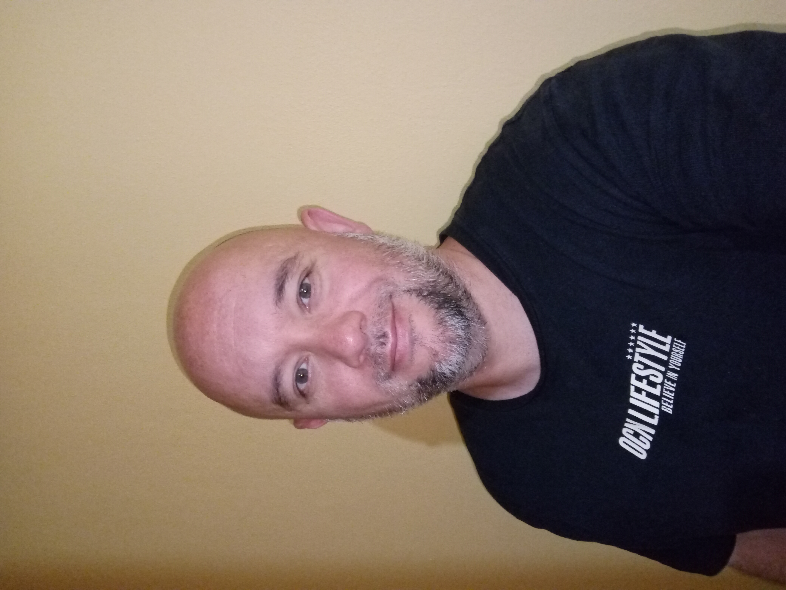

Business Analyst | Python | Power BI | SQL | Machine Learning
Creo que la tecnología y el conocimiento tienen verdadero valor cuando se convierten en herramientas capaces de mejorar la forma en que las personas aprenden, trabajan y resuelven problemas reales. Mi motivación nace de la curiosidad por comprender sistemas complejos y de la convicción de que la ciencia de datos, la ingeniería y la investigación aplicada pueden generar un impacto positivo y sostenible en áreas como la energía, la inteligencia artificial, la robótica y la educación.
Integro investigación aplicada, pensamiento analítico y desarrollo tecnológico para transformar ideas en soluciones concretas. Combino análisis de datos, modelado computacional, programación científica y simulación computacional con un enfoque interdisciplinario que une rigor técnico y creatividad aplicada.
A lo largo de mi trayectoria, he participado activamente en proyectos de investigación relacionados con modelos de gasificación y el estudio del hidrógeno como catalizador, además del desarrollo de prototipos robóticos y herramientas educativas interactivas. Estas experiencias fortalecieron mis competencias en diseño de interfaces, control inteligente y desarrollo de soluciones orientadas a problemas reales.
En el ámbito académico, colaboro en la docencia mediante la creación de estrategias didácticas, el desarrollo de contenidos y la implementación de herramientas educativas que faciliten la comprensión de conceptos complejos en áreas como matemáticas, algoritmos, complejidad computacional, compiladores y robótica. Mi enfoque combina la teoría con la práctica, promoviendo experiencias de aprendizaje aplicadas y significativas.
También he publicado artículos científicos vinculados a energía renovable, inteligencia artificial y aplicaciones tecnológicas, reafirmando mi compromiso con la investigación de calidad y la generación de conocimiento útil para la industria y la educación. Además, cuento con experiencia en la comunicación de resultados técnicos y científicos en contextos académicos y profesionales.
Mi objetivo es seguir integrando la investigación, la docencia y la ciencia de datos para desarrollar soluciones innovadoras, útiles y sostenibles, manteniendo siempre un enfoque humano, interdisciplinario y orientado a generar impacto real.